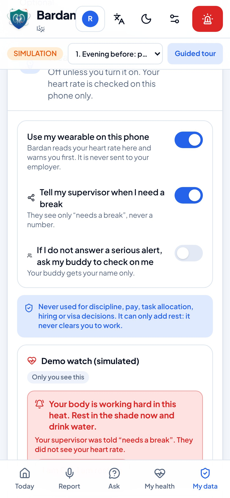
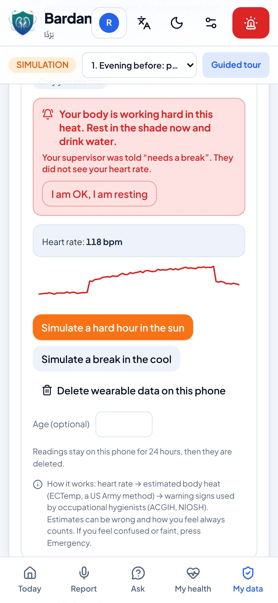
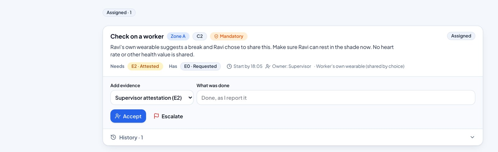

The worker’s watch warns the worker. The employer gets three words, if the worker says so.

1Off until the worker choosesThree separate switches. Never used for discipline, pay, tasks, hiring or visas.

2The worker is told firstHeart rate and the body-heat estimate stay on the phone; they can only add rest.

3
The supervisor gets a task, not a number“Check on a worker”: make sure he can rest in the shade now. No heart rate or other health value is shared, and the task needs its evidence like any other.